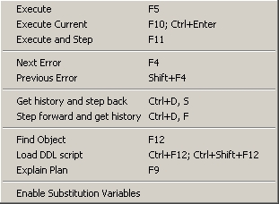

| Script Menu | Previous Top Next |
|

|
Execute : execute the whole script
Execute Current : execute current sql statement
Execute and Step : execute current sql statement and move cursor to next one
Next Error : move cursor to line of next error
Previous Error : move cursor to line of previous error
Get history and step back : put at current cursor position last history query
Step forward and get history : put at current cursor position next history query
Find Object : find object at current position
Load DDL script : load DDL script of object at current position
Explain Plan : explain plan of current sql statement
Enable Substitution Variables : enable/disable scan for variable substitution
|